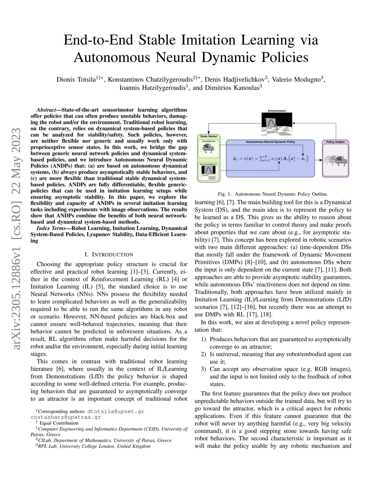

End-to-End Stable Imitation Learning via Autonomous Neural Dynamic Policies
Dionis Totsila*, Konstantinos Chatzilygeroudis*, Denis Hadjivelichkov, Valerio Modugno, Ioannis Hatzilygeroudis, and Dimitrios Kanoulas.
Life-Long Learning with Human Help (L3H2) Workshop, at ICRA, 2023